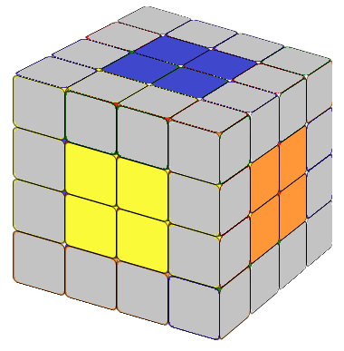
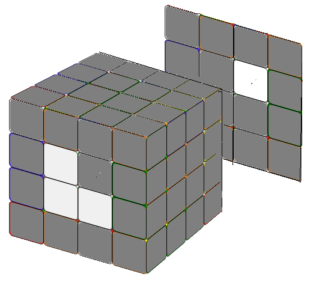
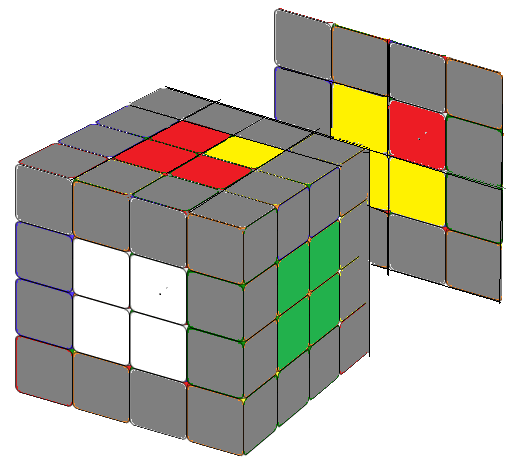
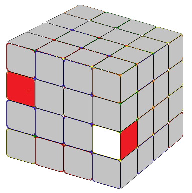
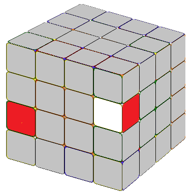
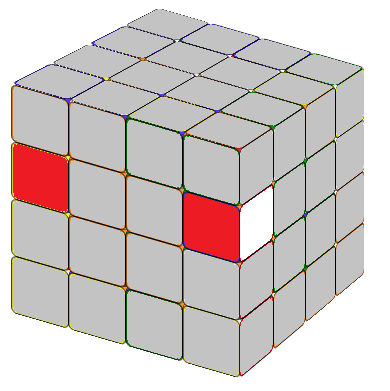
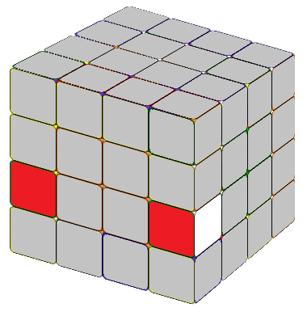
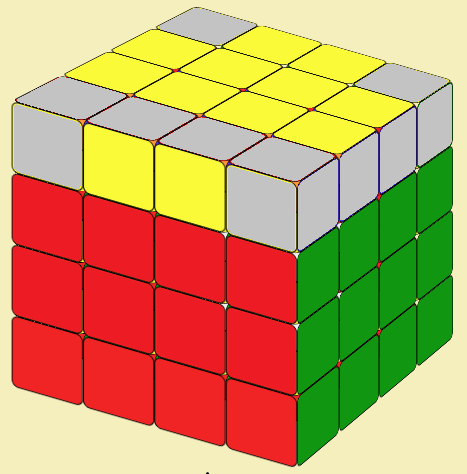
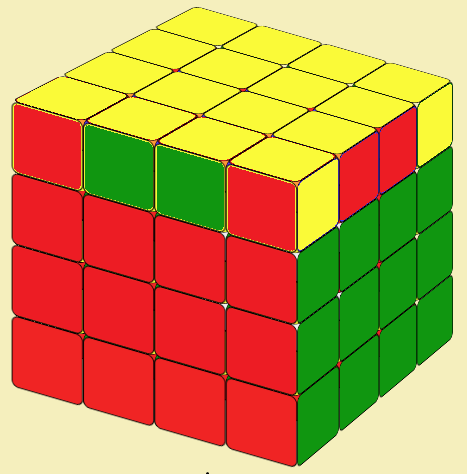

Let us now examine how to solve a 4x4 cube. The most common method is to reduce a 4x4 cube to a 3x3 cube, whose solution we already know.

In contrast to 3x3 cubes, whose center is fixed, we must pay special attention to the relative positions of center blocks. If the orientation of the center block orientation is wrong, you will not be able to solve the cube. Let's put the cube in the following way: yellow top , white bottom , red front , orange back , green right and blue left . If you are not sure of the orientation, place a solved 3x3 cube next to you for reference.
To solve the center block, we usually start with a 1x2 block first and then add another 1x2 block, without changing the already solved center block. The first 4 centers are usually easy. If you encounter difficulties in the last two center blocks,, the following 2 formulas might help you.


Note that since r2' = r2, you can interchange r2 and r2' in the first formulas as you wish. To solve a 4x4 cube, it is better to solve it in pairs (white-yellow) (red-orange) (green-blue), otherwise you can easily get confused about the relative positions of the center middle blocks. And if you solve it in pairs, you do not need the second formula. We included it just for fun, because it is almost identical to the formula for the counterclockwise fish pattern in a 3x3 cube. Just replace the R or R' with r or r'.
Animation: Fix the centerThis can be done in many ways, and there are also many formulas available on the Internet. I learned this method recently, and it is (in my opinion) the best so far. In this method we only need to remember one formula:




For both situations in Fig 2.1 or Fig 2.2 apply formula:
Using these methods we could solve all 12 edge blocks.Now the 4x4 cube is reduced to 3x3 and we could solve it using the same way to solve 3x3 cubes.
Animation: Combining EdgesNow we have the 4x4 cube with solved centers (2x2 blocks) and edges (1x2 blocks). We can solve it just like a 3x3 cube. There are, however, situations that will never arise in a 3x3 cube.


The following formula will solve this situation(Fig.3.1).
Unlike a 3x3 cube, here in the last step, we may need to solve two and only two edges (Fig.3.2). Let Q be the second layer beside R (Q is not a standard notation), the following simple formula will solve the cube or bring the cube to a familar 3x3 cube case.
Now you have solved the 4x4 Rubik's Cube. Enjoy!